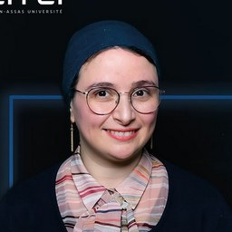

Une équipe
qui code, enseigne & cherche.
Enseignants-chercheurs et intervenants : ils accompagnent les étudiants dans l'apprentissage de l'informatique, des mathématiques, de la data, de l'intelligence artificielle, de la cybersécurité et des réseaux.
L'enseignement
par celles & ceux
qui font la recherche.
L'équipe pédagogique combine excellence académique et expérience industrielle. La majorité des enseignants permanents sont aussi chercheurs au sein de l'Efrei Research Lab, structuré autour de trois axes : Données & IA, Sécurité & Confiance numérique, Réseaux de communication.
Vous découvrirez ici deux grandes familles : la section Mathématiques, Informatique, Data & IA et la section Systèmes, Réseaux & Sécurité. Au total, près de 50 enseignants-chercheurs permanents.
Section 01
Mathématiques,
Mathématiques,
Informatique, Data & IA
Algorithmique, modélisation, science des données, deep learning, vision par ordinateur, génie logiciel — le cœur scientifique du département.
Katarzyna Wegrzyn-Wolska
Professeure · Directrice adjointe Efrei Research Lab · HDR Données & IAFaten Chaieb-Chakchouk
Professeure · Resp. adjointe axe Données & IA · Resp. majeure Image & VR · HDR Image & VRMohamed Hamidi
Enseignant-chercheur en informatique · Sécurité multimédia & vision par ordinateur Encadrant TI402Mohamad Ghassany
Enseignant-chercheur · Manager pôles Data & IT · Resp. majeure Data and Artificial Intelligence Data & IACarlo Bianca
Enseignant-chercheur en mathématiques · Doctorat École Polytechnique de Turin · HDRCherifa Ben Khelil
Enseignante-chercheuse en informatique · Doctorat ENSI Manouba / Univ. OrléansDjallel Dilmi
Enseignant-chercheur Données & IA · Resp. majeure Big Data & Machine Learning Deep LearningRalph Bou Nader
Enseignant-chercheur Sécurité, Résilience & Confiance numérique · Resp. majeure Data EngineeringKhodor Hammoud
Enseignant-chercheur Données & IA · Doctorat Université Paris-CitéIlyes Jenhani
Enseignant-chercheur Données & IA · Resp. majeure Software EngineeringJean-Charles Huet
Enseignant-chercheur Données & IA · Resp. programmes Logiciels & SI du Cycle IngénieurJacques Augustin
Enseignant · Direction de la majeure Software Engineering · Architecture SI & DevOps DevOpsMalika Charrad
Enseignante-chercheuse Données & IA · Doctorat ENSI / CNAMBenoit Charroux
Enseignant-chercheur Sécurité, Résilience & Confiance numérique · Resp. programmes transversesMano Joseph Mathew
Enseignant-chercheur Données & IA · Resp. majeure Bio-informatique Bio-infoSalim Nahle
Enseignant-chercheur · Responsable Data & IAStephany Rajeh
Enseignante-chercheuse Données & IA · Science des réseaux · Sorbonne UniversitéNicolas Flasque
Enseignant – Ingénieur Pédagogique · Programmation Python & C · Mathématiques appliquéesAhmad Tay
Enseignant-chercheur Données & IA · Doctorat Université de ToulonMondher Maddouri
Enseignant-chercheur Données & IADaniel Mai
Enseignant-chercheur Données & IA · Réalité Virtuelle & Systèmes IntelligentsYvan Guifo Fodjo
Enseignant-chercheur en informatique · LIP6 Sorbonne UniversitéMarwa Harzi
Enseignante-chercheuse Réseaux de communication · Resp. parcours Logiciels & SI ApprentissageImène Benkermi
Enseignante · Doctorat Univ. Rennes 1 · Systèmes Temps RéelFélix Baschenis
Enseignant · Agrégation 2013 · Calculabilité-logique · ENS CachanFederico Zalamea
Enseignant-chercheur Sécurité, Résilience & Confiance numérique · Doctorat Paris SorbonneMourad Kmimech
Enseignant-chercheur en informatique · Doctorat Univ. Pau et Pays de l'AdourZahraa Mohsen
Enseignante-chercheuse en mathématiques · Doctorat Université Paris CitéRado Rakotonarivo
Enseignant-chercheur en informatique · LIPN Sorbonne Paris NordEtienne Pernot
Directeur recherche & valorisation · Polytechnique · Télécom Paris · Doctorat Paris-Dauphine Direction LabIsabelle Badreau
Enseignante · Master 2 sciences économiques (Paris 1)
Section 02
Systèmes,
Systèmes,
Réseaux &
Sécurité.
Cybersécurité, réseaux, cloud, systèmes embarqués : l'autre versant du département, en lien direct avec le Campus Cyber.
Boussad Ait Salem
Enseignant-chercheur · Resp. pôle Sécurité, Réseaux & Systèmes Embarqués · Resp. majeure Cybersécurité & Cloud Resp. pôleLayth Sliman
Professeur · Resp. axe de recherche Sécurité, Résilience & Confiance Numérique · HDR Cyber · HDRDario Vieira
Professeur associé · Resp. axe Réseaux de Communication · Référent Science Ouverte RéseauxMax Agueh
Responsable du Pôle Sécurité, Réseaux, Systèmes Embarqués · Doctorat Univ. NantesFériel Bouakkaz
Enseignante-chercheuse Sécurité · 1ʳᵉ femme CEI en France · Cybersécurité Ethical HackingYessin Neggaz
Enseignant-chercheur Réseaux de Communication · Resp. majeure Networks & Cloud InfrastructureYulliwas Ameur
Enseignant-chercheur Sécurité · Chiffrement homomorphe & ML · CNAMLamine Bougeroua
Enseignant-chercheur Données & IA · Doctorat Paris-Est CréteilSouheib Yousfi
Enseignant-chercheur Sécurité · Vote électronique · Laboratoire LIP2Lazhar Hamel
Enseignant-chercheur Sécurité · Vérification formelle · Doctorat Univ. SfaxYoussef Ait El Mahjoub
Enseignant-chercheur Réseaux de Communication · Resp. filière ITJohannes Gomolka
Enseignant-chercheur Sécurité · Resp. majeure IT for Finance · Univ. Potsdam IT Finance
Efrei Research Lab
Trois axes,
Trois axes,
une ambition.
Axe 01
Données & Intelligence Artificielle
Deep learning, vision par ordinateur, science des réseaux, traitement automatique du langage. Responsable : Pr. Katarzyna Wegrzyn-Wolska.
Axe 02
Sécurité, Résilience & Confiance Numérique
Cryptographie, chiffrement homomorphe, vérification formelle, vote électronique. Responsable : Pr. Layth Sliman.
Axe 03
Réseaux de Communication
Architectures réseau, cloud computing, IoT, systèmes distribués. Responsable : Pr. Dario Vieira.
55
Enseignants-chercheurs
65
Doctorants
3
Axes de recherche
90+
Professeurs permanents